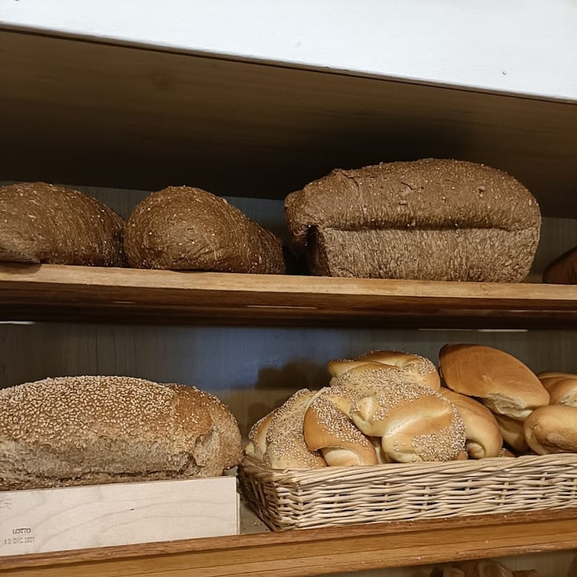
Pane & michette
La michetta, i pani rustici, il pane con l'uvetta. Sfornato dal mattino.
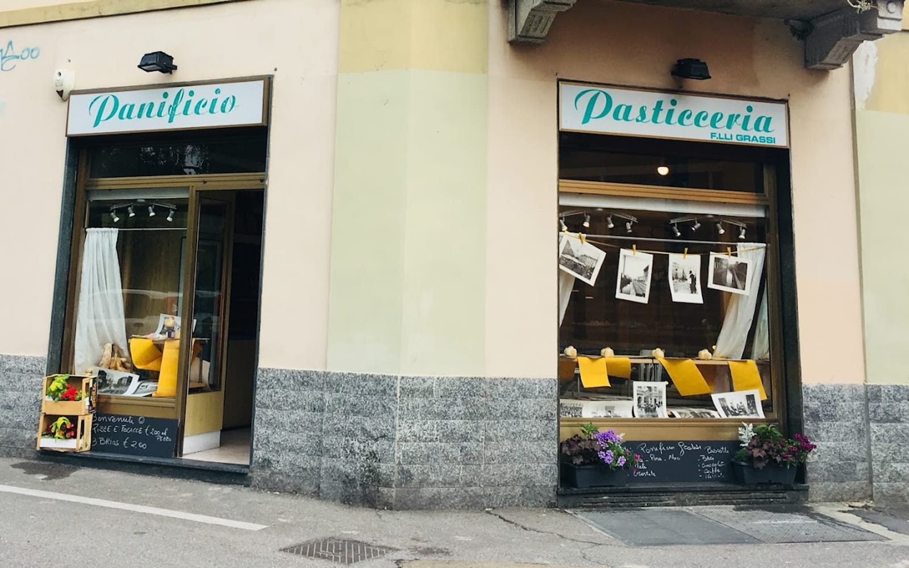
Panificio & Pasticceria · Via Oroboni 8, Affori
Il forno di quartiere come una volta: pane e michette, focacce e pizze, torte, grandi lievitati e il cioccolato artigianale. Sfornati ogni mattina, in Via Oroboni.
Il forno di Affori
Un forno d'altri tempi, con l'insegna di una volta e la lavagna con l'«oggi». Qui si fa tutto in casa: il pane del mattino, le focacce, le torte per le feste, i grandi lievitati e — cosa rara per un forno — il cioccolato artigianale. Impastato, cotto e decorato qui.
Le cose fatte in casa

La michetta, i pani rustici, il pane con l'uvetta. Sfornato dal mattino.
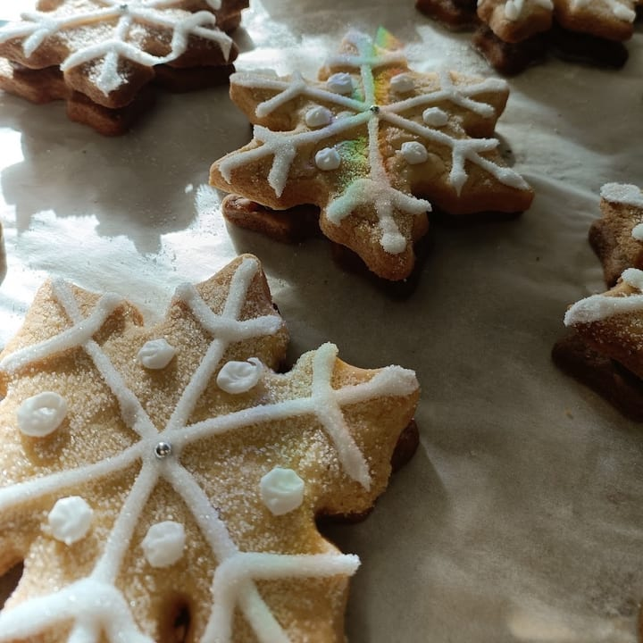
Brioche, pasticcini di mandorla, biscotti decorati.
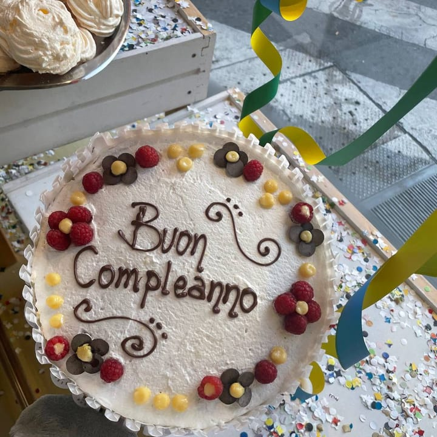
Compleanni e feste: le prepariamo come le vuoi.
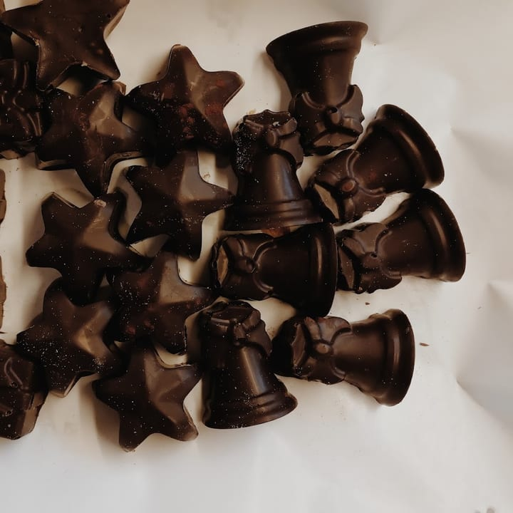
Le creazioni della nostra cioccolatiera. Fatte a mano.
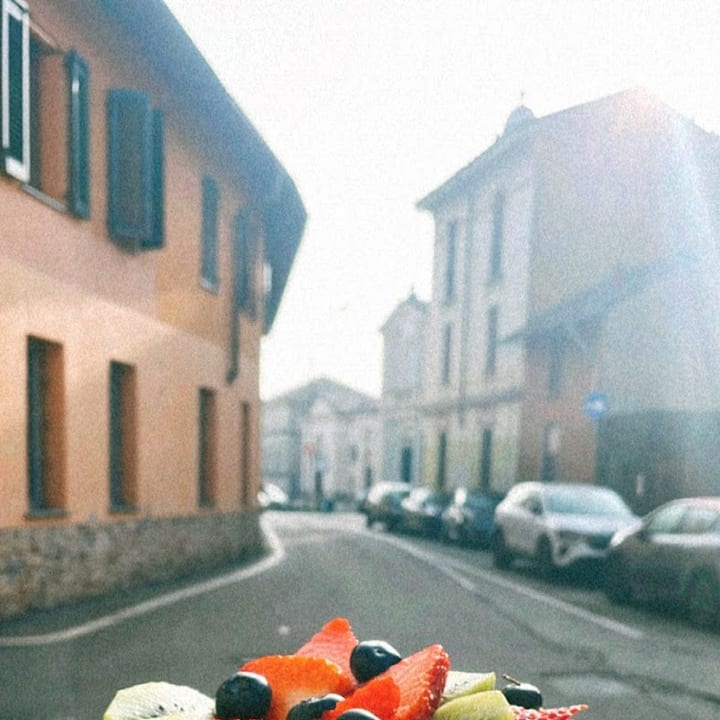
Crostate di frutta e marmellata, dolci di casa.
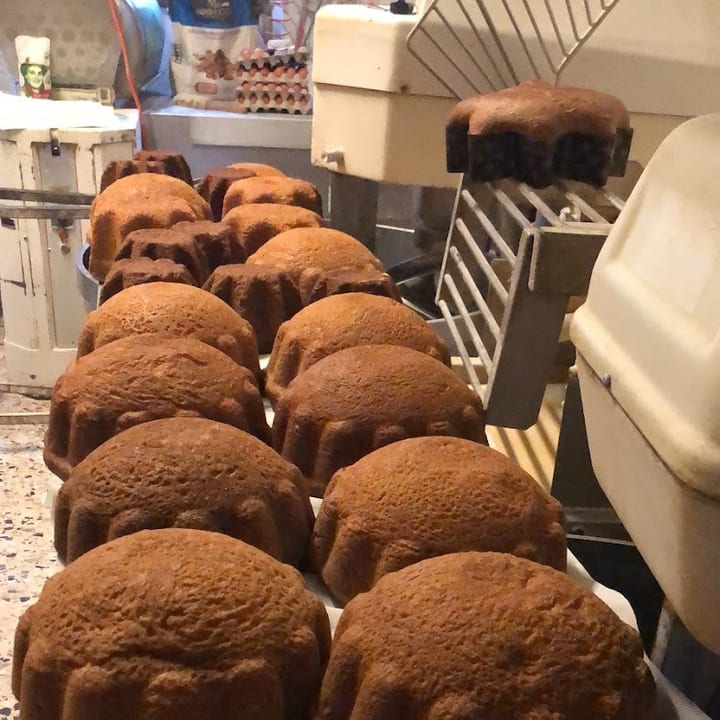
Panettoni e colombe delle feste, lievitati con calma.
E poi le focacce e le pizze al taglio, i grissini, e — alcuni giorni — la gastronomia di casa.
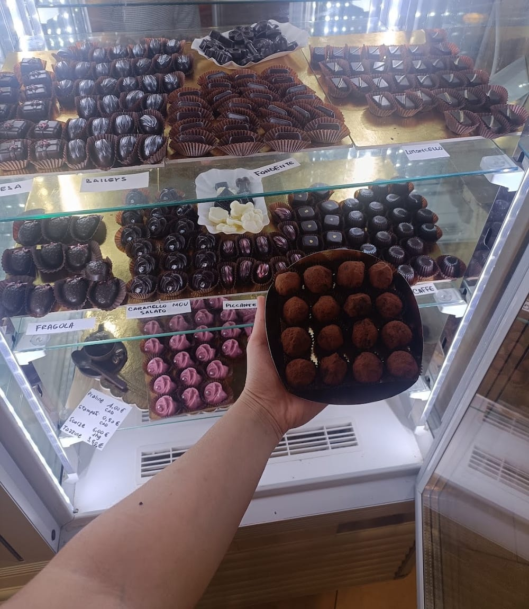
La cosa rara
Non capita spesso in un forno di quartiere: da Grassi c'è una maestra cioccolatiera che tempera, cola e decora il cioccolato a mano. Cioccolatini, praline, forme e uova — le creazioni cambiano con le stagioni e le feste.
Un pensiero da regalare, o da tenersi per sé. Su richiesta anche personalizzato.
Chiedi del cioccolatoPer le feste
Battesimi, compleanni, eventi: il forno diventa catering. Dolce e salato, primi piatti, opzioni vegetariane e vegane, le brioche salate con ingredienti ricercati. «Una bellissima figura», dicono i clienti.
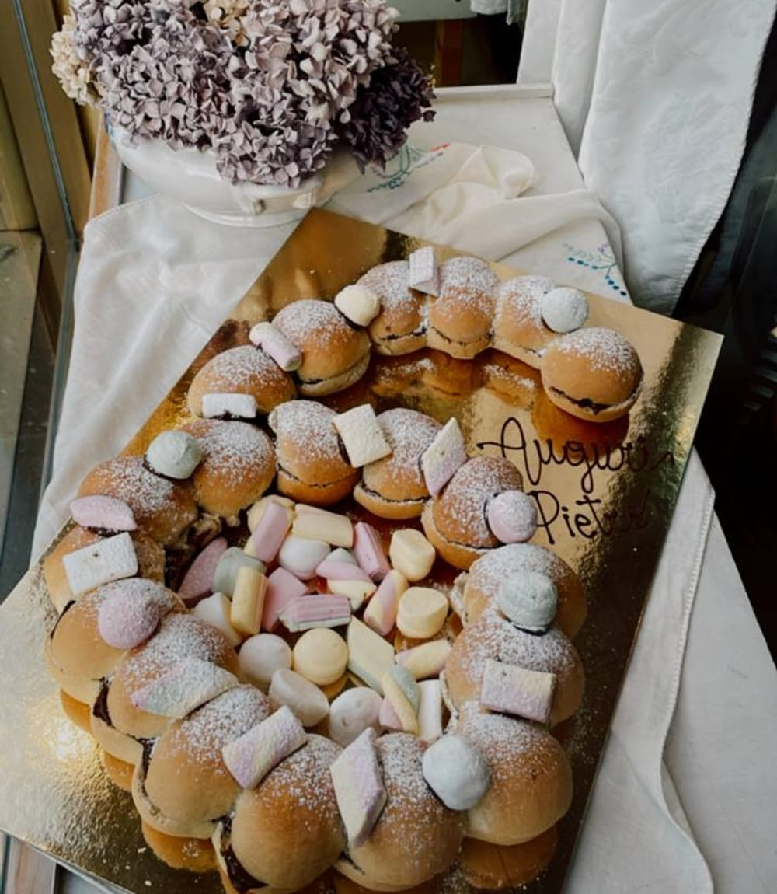
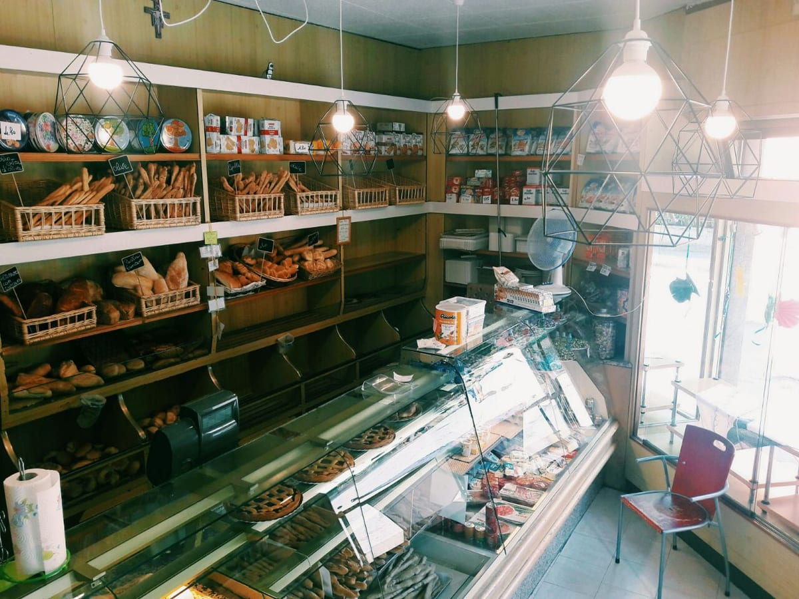
Il forno
L'insegna in corsivo, le foto d'epoca appese in vetrina, la lavagna con l'«oggi». Il Panificio Pasticceria F.lli Grassi è un forno di quartiere all'angolo di Affori, a conduzione familiare, aperto dal mattino presto.
Si entra per il pane e si esce con una torta, un vassoio di pasticcini o un pensiero di cioccolato. Come una volta.
In vetrina
Le voci del quartiere
«Classico forno milanese, pane di ogni tipo, focacce e pizze, dolci e torte anche su prenotazione, e una maestra cioccolatiera con creazioni artigianali.»
— Fulvio M.
«Servizio catering meraviglioso: dolce, salato, primi piatti, vegani e vegetariani. Brioche salate con ingredienti ricercati.»
— Margherita A.
«Pasticcini con le mandorle morbidissimi, eccezionali. La pasticciera ci ha pure regalato una cosina. Una bella scoperta.»
— Cris F.
«Il posto si presenta come i panifici degli anni '60, l'insegna è classica. Molto disponibili e simpatiche.»
— Gg M.
Recensioni reali dei clienti su Google.
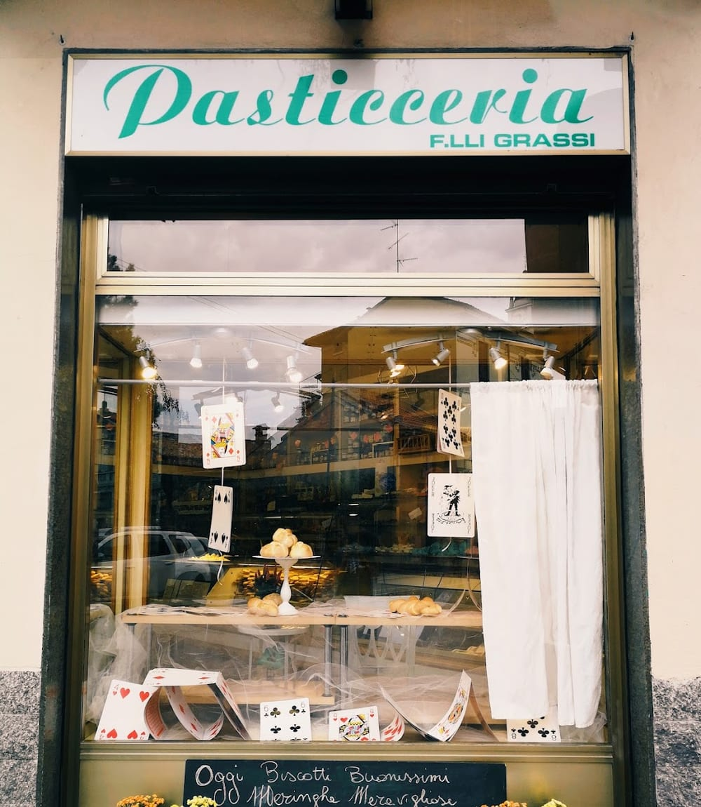
Dove & orari
Aperto ora
Domande frequenti
Praticamente tutto: il pane e le michette, le focacce e le pizze, la pasticceria e le torte su ordinazione, i grandi lievitati e il cioccolato artigianale della nostra cioccolatiera. Alcuni giorni anche piatti di gastronomia.
Sì: torte di compleanno e per le feste, crostate e vassoi di pasticcini su richiesta. Passate o chiamate al 376 011 9492 per concordare.
Sì, curiamo il catering per feste ed eventi: dolce e salato, primi piatti, opzioni vegetariane e vegane, brioche salate. Chiamateci per un preventivo.
Siamo un forno del mattino: lunedì–venerdì 6:30–12:30, sabato 7:00–12:30. Domenica chiuso.